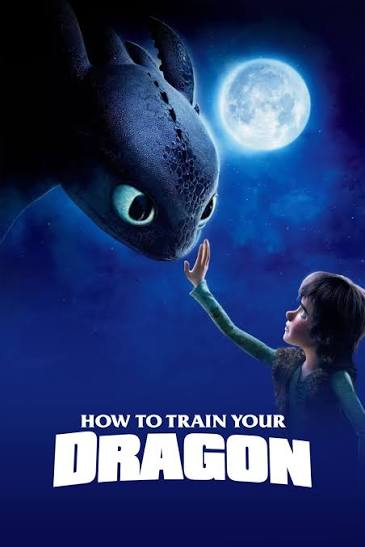
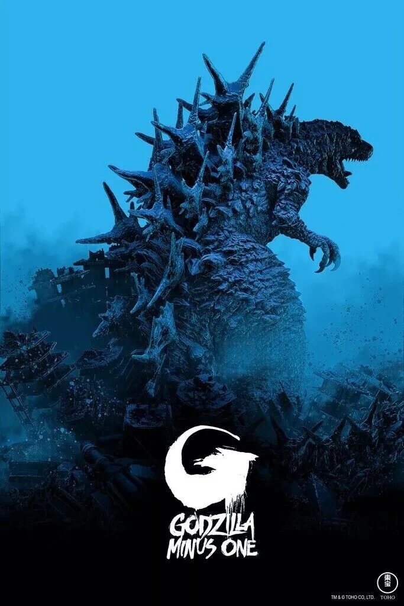
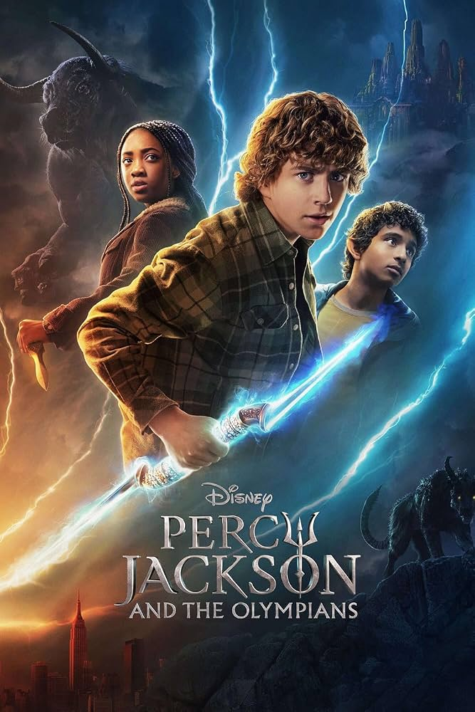
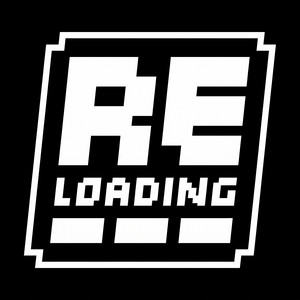
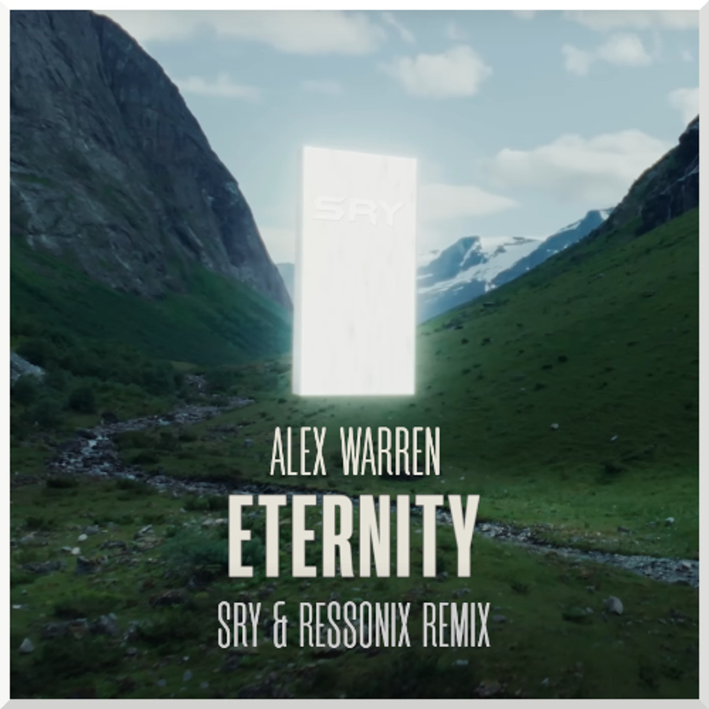
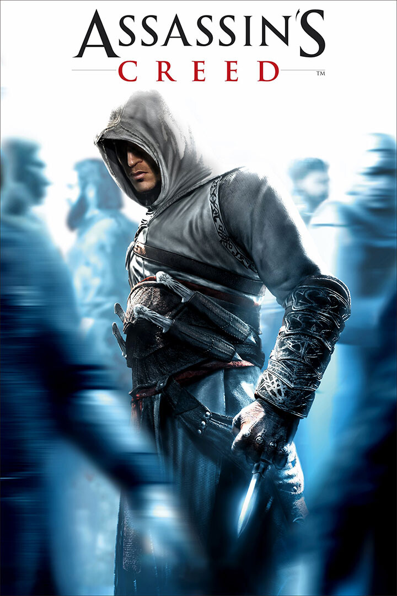
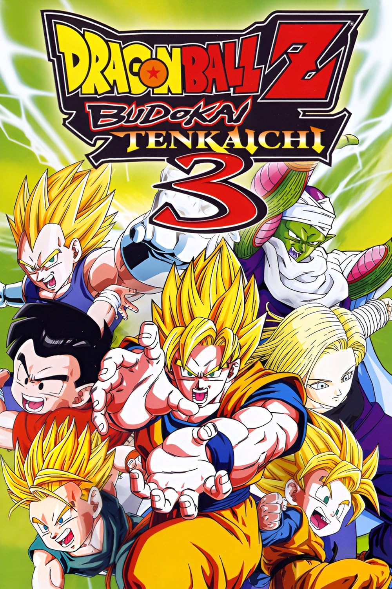
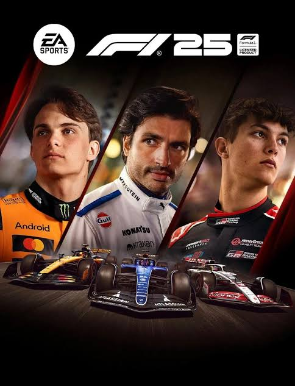

Filme: Como Treinar O Seu Dragão
Soluço é um jovem viking que não tem capacidade para lutar contra os dragões, como é a
tradição local. Sua vida muda quando ele ajuda um dragão que lhe mostra toda a verdade.
Juntos, eles tentam provar que dragões e humanos podem ser amigos.

Filme: Godzilla Minus One
O Japão mal se recuperou da Segunda Guerra Mundial quando um perigo gigantesco emerge na
costa de Tóquio. Koichi, um desertor traumatizado por seu primeiro confronto com Godzilla,
vê isso como uma oportunidade de redimir sua conduta durante a guerra.

Série: Percy Jackson E Os Olimpianos
Percy Jackson, um semideus de apenas 12 anos, aceita seus recém-descobertos poderes divinos
quando o senhor dos deuses, Zeus, o acusa de roubar seu raio. Com a ajuda de um amigo, Percy
precisa restaurar a ordem no Olimpo..
Podcast: 99Vidas
Podcast semanal sobre nostalgia e videogames que marcaram a infância dos
anos 80 e 90.

Podcast: Reloading
Podcast brasileiro semanal de games, trazendo as notícias, acontecimentos e curiosidades mais
importantes do mundo dos videogames. Com Bruno Carvalho, Edu Aurrai, Felipe Mesquita e Rodrigo Cunha.

Música: Eternity - Alex Warren
Canção do cantor e compositor americano Alex Warren, lançada em 18 de julho de 2025 pela Atlantic
Records como parte de seu álbum de estreia, You'll Be Alright, Kid

Game: Assassin's Creed - 2007
Assassin's Creed é um jogo eletrônico de ação-aventura de 2007 desenvolvido pela Ubisoft Montreal e publicado
pela Ubisoft. É o primeiro título da série Assassin's Creed. O jogo foi lançado para PlayStation 3 e Xbox 360
em novembro de 2007.

Game: Dragon Ball Z: Budokai Tenkaichi 3 - 2007
Dragon Ball Z: Budokai Tenkaichi 3 ou Dragon Ball Z: Sparking! METEOR é um jogo eletrônico para PlayStation 2 e
Wii em 3D, de gêneros ação e luta, desenvolvido pela Spike e publicado pela Atari, na América do Norte, e pela
Namco Bandai, na Europa e no Japão.

Game: F1® 25 - 2025
F1 25 é um jogo eletrônico de corrida desenvolvido pela Codemasters e publicado pela EA Sports. É o décimo oitavo
título da série F1 da Codemasters e o quarto da série da EA Sports, retomada em 2021. O jogo foi lançado em 30 de
maio de 2025 para PlayStation 5, Xbox Series X/S e Microsoft Windows.